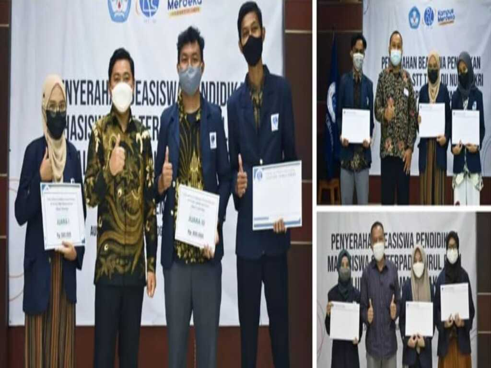

Kuliah Umum dan pengumuman mahasiswa terbaik
Kuliah Umum adalah kegiatan yang dilaksanakan oleh STT Terpadu Nurul Fikri yang bertujuan agar para sivitas akademika memiliki pengetahuan dan keterampilan dalam bidang Teknologi Digital seperti memahami Evolusi Teknologi, Peluang & Tantangannya, Bagaimana untuk menang?, Bekal apa yang disiapkan?, dan Dilandasi sebagai Ibadah kepada Allah SWT. Di dalam rangkaian acara kuliah umum tersebut diadakannya sesi pengumuman mahasiswa terbaik dengan perolehan nilai ipk yang cukup tinggi serta prestasi-prestasi dalam bidang teknologi lainnya.